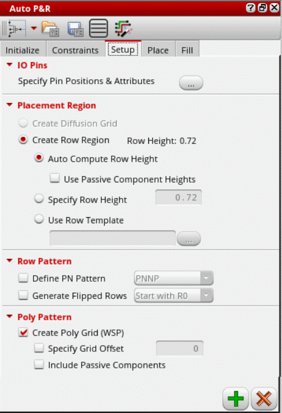
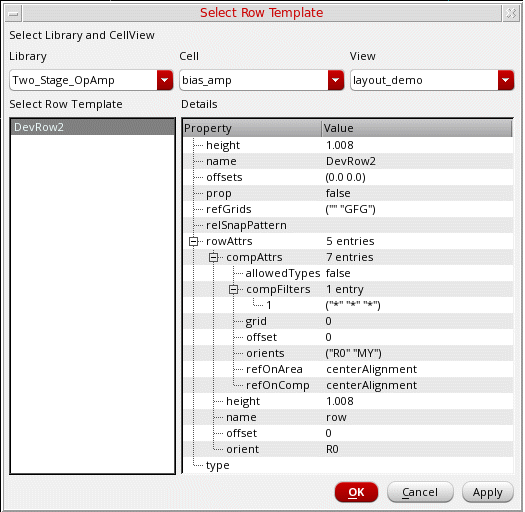
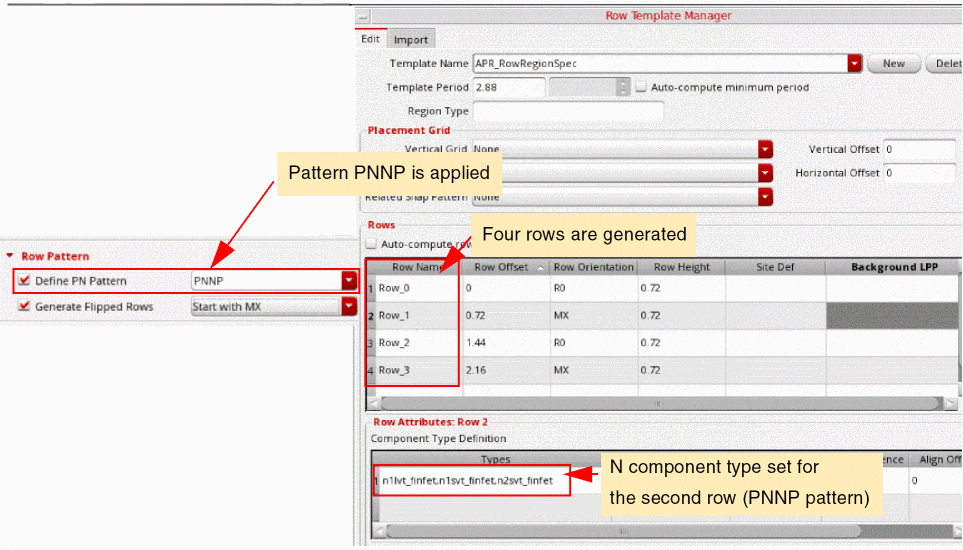
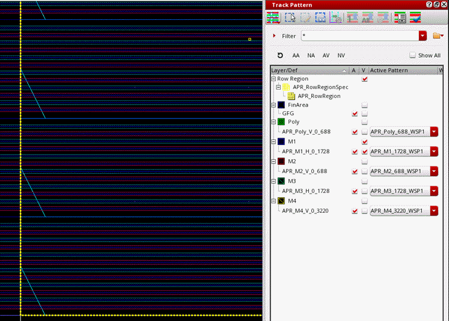

Deriving Row Regions and Grids in the Automated Device Placement and Routing Flow
Generating row regions and grids is an optional task, but is highly recommended to obtain better results in the automated device placement and routing flow. During placement, devices are snapped to their nearest row regions or grids. In the absence of row regions and grids, coarse placement is done, where approximate placement locations are determined based on the design constraints and congestion.
At advanced nodes, grids—including fins, WSPs, poly snap patterns, and rows—are important for the optimal placement and routing of custom and analog layouts. Row regions or diffusion grids are used to facilitate device placement and derive WSP information, which used for device routing and snapping.
The automated device placement and routing flow lets you derive poly and diffusion grids or row regions automatically based on the device footprint, layers, and DRCs, with minimal user input. Row regions are created in the layout based on the row templates.
Before generating rows and grids, ensure that your design has a uniform gate length to ensure a uniform poly pitch for device snapping.
To derive grids and row regions:
-
Open the Setup tab of the Auto P&R assistant.
 -
Click the button beside Specify Pin Positions & Attributes to open the Pin Planner tab of the Pin Placement form.
Use the options on this form to set pin constraints and plan the placement of pins in the design. - Complete the required pin settings and close the Pin Placement form.
-
Select a mode to specify the placement region. The Create Diffusion Grid option is available only if the enablePlaceWithWsp environment variable to
t.
For more information, see Placing Multi-Height Devices Using Automatic Device Placer. - Select Create Row Region to specify whether rows are to be created in the row region.
- Select one of the following options:
- If Auto Compute Row Height is selected, select Use Passive Component Heights to consider passive components for row height calculations.
-
If Use Row Template is selected:
-
Click Browse to display the Select Row Template form.
- Select the required Library, Cell, and View. All templates stored in the selected cellview are listed in the Select Row Template box.
- Select the required row template.
- Check the row template properties in the Details panel to ensure that they meet your requirements.
- Click OK.
The name of the selected row template is displayed in the Use row template field. -
Click Browse to display the Select Row Template form.
- Select Define PN Pattern to control the distribution of P and N devices in rows.
-
Either type the required PN pattern or select a PN pattern from the drop-down list.
In the following example, thePNNPpattern is selected. Multiple row attributes with their component types set are created.
 -
Select Generate Flipped Rows to allow generation of flipped rows, as shown in the above example.
Select an orientation with which the first (bottom-most) row must start: Start with R0 or Start with MX. - Select Create Poly Grid (WSP) to create poly layer patterns as WSPs. If the devices have different poly pitches, multiple poly patterns are created.
-
Select Specify Grid Offset to specify an offset for the poly grid.
Specify an offset value in the adjoining text box. - Select Include Passive Components to recognize the poly layer patterns of passive devices while generating WSPs.
-
Click Apply to create a row template, a row region, rows, and poly patterns, as specified. The P/N pattern selection controls how rows are created.
WSP grids are generated in the layout canvas as per your specifications.
The Track Pattern assistant lists all the auto-created WSPs and rows with the APR- prefix to differentiate them from existing WSPs.

Related Topics
Auto P&R Assistant User Interface for Device-Level Placement
Return to top